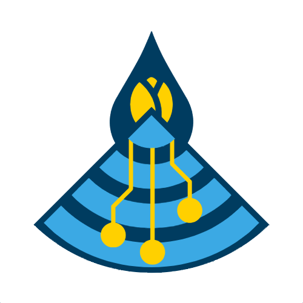

This website allows you to generate the code the NodeFlow On-site Sensing System uses to read the sensors that you will plug into it, and generate the information you are interested in.
Please read the full instructions in the NodeFlow On-site guidelines (to add as a hyperlink) and videos (to add ad a hyperlink) on how to use the device.
To generate the code for your NodeFlow On-site device, you will need to know:

NodeFlow